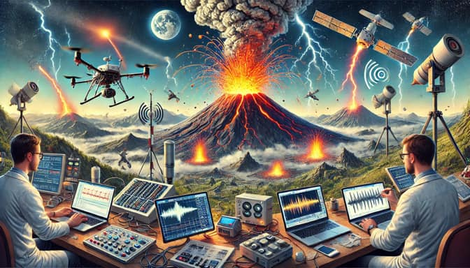

Welcome to the University of South FLOrida Virtual Volcano Observatory (FLO-VO) Webpage!
FLO-VO (pronounced "flow-vee-oh") is a group of geoscientists at the University of South Florida whose aim is to provide a virtual platform and value-added data products that support and enhance the work of active volcano observatories across the USA, Latin America, and the Eastern Caribbean in detecting, analyzing, and forecasting volcanic activity. Our mission is to improve public safety, inform policy decisions, and advance scientific knowledge in volcanology by fostering international collaboration and data accessibility. By bridging the gap between remote monitoring and on-the-ground expertise, we envision a world where local, national, and international observatories can work seamlessly together to predict volcanic hazards, mitigate risks, and protect communities from volcanic disasters. We also run a real-time monitoring lab to simulate a typical volcano observatory environment, to help train, teach, and prepare students for careers in this exciting and important field.
